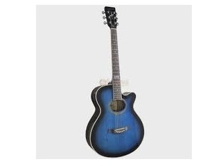
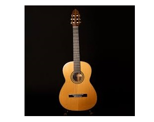
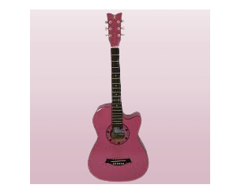

Piano de Cauda


O piano é um instrumento de tecla que produz som ao tocar nas cordas
com os martelos, caracterizado por sua ampla variedade e habilidade de
tocar cordas livremente. É um instrumento musical de grande aceitação.
Violão


